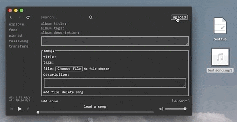

The v0.0.3-alpha release brings some minor bug fixes as well as some bigger updates. All bug fixes and new features are listed here.
Files can now be dropped anywhere in the song/file upload section. If no title/name is currently provided, the relevant field will auto-fill with the name of the file dropped. Songs still only allow mp3 files to be dropped, whereas any file format can be dropped into the file section. See gif below:
By changing the IPFS_API_HOST setting to anything other than localhost or 127.0.0.1, ohm will now bypass starting a local ipfs daemon and instead try to connect to a remote ipfs node. A guide on how to set up a remote node on a raspberry pi can be found [here].